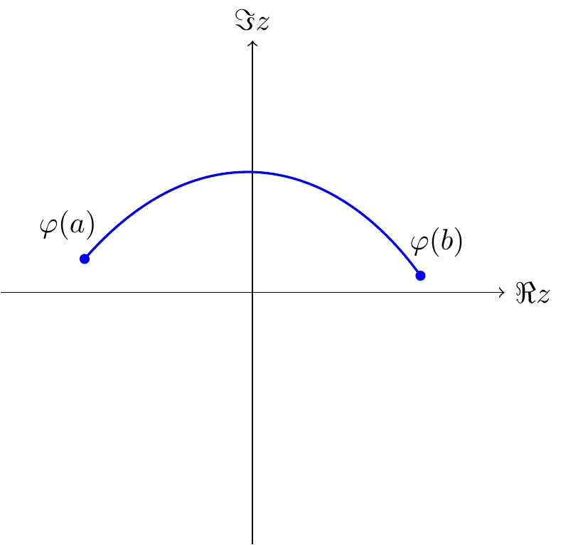
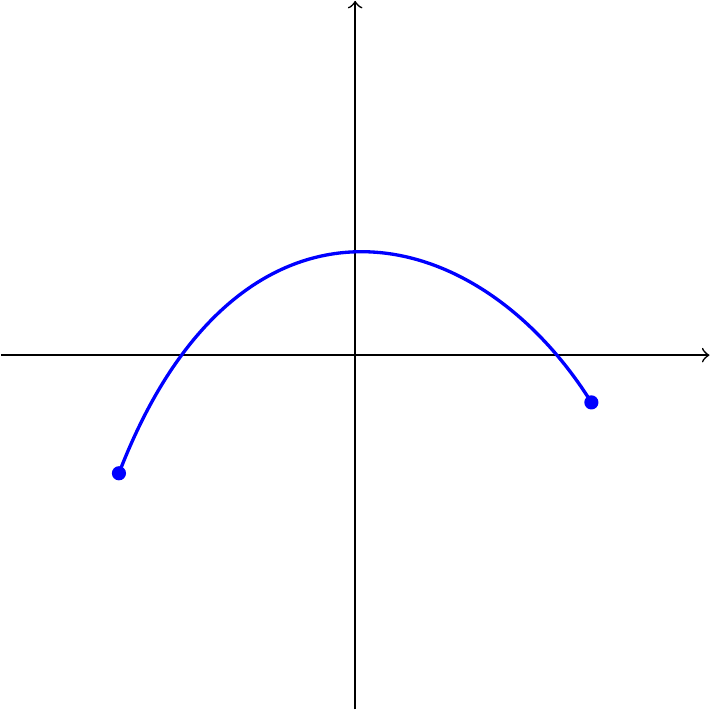
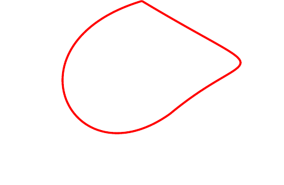
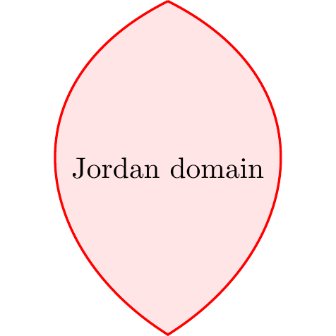

Chapter 5 Univalent Functions
5.1 Basic Principles
5.1.1 Recalling stuff that we already know?
Definition 5.1
- A domain = open connected subset of \(\mathbb{C}\).
- Simply connected is defined via the complement being connected (rather than “no holes” or “every loop contractible” these are equivalent for domains in \(\mathbb{C}\), but the complement-in-\(\hat{\mathbb{C}}\) characterization is the cleanest one to work with).
- A neighborhood of a set \(E \subset \mathbb{C}\) is an open set which contains \(E\).
- A compact Set is a closed and bounded subset of \(\mathbb{C}\).
- The closure \(\overline{E}\) of a set \(E \subset \mathbb{C}\) is the smallest closed set that contains \(E\). Equivalently, \(\overline{E} = E \cup \{\text{limit points of } E\}.\)
- TheInterior \(E^\circ\) of a set \(E\) is the largest open set contained in \(E\). It may happen that \(E^\circ = \varnothing\).
- The boundary of \(E\) is the set \(\partial E = \overline{E} - E^\circ,\) consisting of all points in the closure of \(E\) that are not interior points.
Notation: The unit disk \(\mathbb{D} = \{|z|<1\}\) and its boundary circle \(\mathbb{T}= \{|z|=1\}\).
Definition 5.2
- An Arc in the complex plane is the continuous image of a line segment.
Formally, an arc is a continuous mapping \(z = \varphi(t)\) of an interval \(a \le t \le b\) into \(\mathbb{C}\). - A Rectifiable Arc is an arc that has a finite length — that is, the mapping function \(\varphi\) is of bounded variation.
- A Jordan Arc is an arc without self-intersections.
- A Closed Curve is the continuous image of a circle, or equivalently, an arc whose endpoints coincide.
- A Simple Closed Curve (Jordan Curve) is a closed curve without

Figure 5.1: A continuous arc in the complex plane.

Figure 5.2: Jordan arc (no self-intersections)

Figure 5.3: Closed curve (endpoints coincide)

Figure 5.4: Simple closed curve (Jordan curve) + Jordan domain
Theorem 5.1 (The Jordan Curve Theorem) The Jordan curve theorem asserts that every Jordan curve divides the plane into two regions the interior and the exterior of the curve.
Core complex analysis, compressed:
- Analytic at \(z_0\) \(\Rightarrow\) infinitely differentiable there \(\Rightarrow\) local Taylor series. This equivalence (holomorphic = analytic) is “one of the miracles” it has no real-variable analogue.
- Cauchy’s integral formula \(f(z) = \frac{1}{2\pi i}\oint_C \frac{f(\zeta)}{\zeta - z}d\zeta\) generates the Taylor coefficients by differentiating under the integral sign.
- Uniqueness principle: zeros of a nonzero analytic function are isolated (no accumulation point inside the domain).
- Morera’s theorem: the converse of Cauchy vanishing of all contour integrals \(\Rightarrow\) analytic. This is your go-to tool for proving analyticity of things defined by integrals (you’ll see this trick again with Green’s function below).
- Maximum modulus principle: \(|f|\) has no interior local max unless \(f\) is constant “a peakless landscape,” as Duren nicely puts it.
- Schwarz lemma: \(f:\mathbb{D}\to\mathbb{D}\), \(f(0)=0\) \(\Rightarrow\) \(|f(z)|\le |z|\) and \(|f'(0)|\le 1\), with equality only for rotations \(f(z)=e^{i\theta}z\). Proof is one line: apply max modulus to \(g(z) = f(z)/z\) (removable singularity at 0). This lemma is the seed of an enormous amount of univalent function theory half the book grows out of clever applications of it.
- Residue theorem and its corollary the argument principle: the number of zeros of \(f\) inside \(C\) equals \(\frac{1}{2\pi i}\oint_C \frac{f'}{f}dz\), i.e. the winding number of \(f(C)\) about \(0\). This is the “count zeros by watching the image curve wind around the origin” idea.
- Rouché’s theorem: if \(|g|<|f|\) on \(C\), then \(f\) and \(f+g\) have the same number of zeros inside \(C\). Proof is slick: \(\Delta_C \arg(f+g) = \Delta_C\arg f + \Delta_C \arg(1+g/f)\), and the second term is \(0\) because \(1+g/f\) stays in the right half-plane (never winds around 0) when \(|g/f|<1\).
- Hurwitz’s theorem: locally uniform limits of zero-free (or non-vanishing) analytic functions are either identically zero or zero-free themselves more precisely, zeros of the limit are limits of zeros of the \(f_n\). Proved directly from Rouché by shrinking a circle around a zero \(z_0\) of \(f\) and comparing \(f\) to \(f_n\) there.
- Univalence is essentially closed under locally-uniform limits: if \(f_n\to f\) locally uniformly and each \(f_n\) is univalent, \(f\) is univalent or constant (the “or constant” is unavoidable e.g. \(f_n(z) = z/n \to 0\)). This single theorem is why families of univalent functions behave so well under limits, and it’s the linchpin for the compactness argument used later to prove Riemann mapping.
5.2 Local Mapping Properties
Since analytic \(f = u+iv\) satisfies Cauchy–Riemann, the real Jacobian of the map \((x,y)\mapsto(u,v)\) works out to be exactly \(|f'(z)|^2\). So:
- \(f'(z_0)\ne 0 \iff\) \(f\) locally univalent near \(z_0\) (inverse function theorem one way, Rouché the other way).
- Warning example: local univalence everywhere does not imply global univalence. \(f(z)=z^2\) on the annular sector \(1<|z|<2,\ 0<\arg z < 3\pi/2\) is locally univalent throughout but not globally (angle range exceeds \(\pi\), so some values get hit twice). This is exactly the kind of subtlety that matters for quadratic differentials and slit mappings local vs. global univalence is a recurring theme in your own extremal-problem work.
Geometric meaning of \(f'\):
- \(|f'|^2\) = local area magnification \(\Rightarrow\) Area of \(f(D) = \iint_D |f'(z)|^2\,dx\,dy\).
- \(|f'|\) = local arclength magnification \(\Rightarrow\) length of \(f(C) = \int_C |f'(z)|\,|dz|\).
- \(\arg f'(z_0)\) = local rotation angle. This is why analytic univalent maps are called conformal: the rotation is the same for every arc through \(z_0\), so the angle between two arcs is preserved.
Then: linear fractional (Möbius) transformations map “circles” (circles-or-lines) to “circles,” preserve inverse-point pairs, and the automorphisms of \(\mathbb{D}\) are exactly \(f(z) = e^{i\theta}\frac{z-\alpha}{1-\bar\alpha z}\), \(|\alpha|<1\) derived from the Schwarz lemma.
5.3 Normal Families
- Normal family: every sequence has a locally-uniformly-convergent subsequence (this is the complex-analytic analogue of Bolzano–Weierstrass).
- Local boundedness (uniformly bounded on compacts) \(\Rightarrow\) (via Cauchy’s formula) the derivatives are also locally bounded.
- Montel’s theorem: locally bounded \(\Rightarrow\) normal. Proved by a diagonal argument: converge on a countable dense set, then use local boundedness (via the Cauchy estimate) to upgrade pointwise convergence on a dense set to uniform convergence on compacts essentially Arzelà–Ascoli done by hand.
- Converse also holds: normal \(\Rightarrow\) locally bounded.
- Vitali’s theorem: for a normal family, convergence at just a set of points with an accumulation point in \(D\) already forces full locally-uniform convergence. (Proof: any two subsequential limits must agree on the accumulation set, hence agree everywhere by uniqueness.)
Punchline for the book: the class \(S\) (univalent, \(f(0)=0\), \(f'(0)=1\) on \(\mathbb{D}\)) is locally bounded via the growth theorem \(|f(z)| \le |z|(1-|z|)^{-2}\) (proved later, in Ch. 2 in Duren[]), hence normal by Montel, hence (combining with the §1.1 univalence-limit theorem, ruling out the constant case since \(f_n'(0)=1\) forces \(f'(0)=1\ne 0\)) \(S\) is a compact normal family. This single fact is the reason extremal problems over \(S\) (like the ones you’ve been chasing with the \(a_3 - \lambda a_2^2\) functional) are guaranteed to have solutions.
5.4 Extremal Problems
General machinery: a continuous functional \(\phi\) on a compact normal family \(\mathcal{F}\) always attains its supremum of \(\mathrm{Re}\,\phi\) take a maximizing sequence, extract a locally-uniformly-convergent subsequence (compactness), use continuity of \(\phi\) to pass to the limit. This is the abstract shape of every extremal-function existence proof in the book (and, not coincidentally, of the Schiffer-variation existence arguments you’ve been working through for Pfluger’s paper).
Also: if \(\mathcal{G}\) is dense in \(\mathcal{F}\), sup over \(\mathcal{G}\) = sup over \(\mathcal{F}\) useful for restricting to “nice” functions (e.g. slit mappings) without changing the extremal value.
5.5 The Riemann Mapping Theorem
Koebe’s compactness proof (not Riemann’s original Dirichlet-principle argument, which had a gap Riemann didn’t close):
- Let \(\mathcal{F}\) = univalent \(f:D\to\mathbb{D}\) with \(f(\zeta)=0\), \(f'(\zeta)>0\). Show \(\mathcal{F}\ne\emptyset\) (using simple connectivity to take a square-root branch of \(z-\alpha\) for an omitted point \(\alpha\), then a Möbius map to squeeze into \(\mathbb{D}\)).
- \(\mathcal{F}\) is normal (Montel, since it’s bounded by 1).
- Maximize \(f'(\zeta)\) over \(\mathcal{F}\) extremal function \(f\) exists by the §1.4 machinery, and it’s not constant since \(f'(\zeta)=M>0\).
- Show \(f\) must be onto \(\mathbb{D}\): if it missed a point \(\omega\), you can construct (via a square root of a Möbius transform of \(f\)) another candidate \(G\in\mathcal{F}\) with \(G'(\zeta) > f'(\zeta)\) contradicting extremality. This is the clever “square-root trick” step; it’s the crux of the whole proof.
- Uniqueness: any two such maps differ by an automorphism of \(\mathbb{D}\) fixing \(0\) with positive derivative there, which is forced to be the identity.
Plus Carathéodory’s extension theorem: if \(D\) is a Jordan domain, the Riemann map extends to a homeomorphism of the closures stated without proof (referred to Goluzin).
5.6 Analytic Continuation
- Basic continuation across a shared boundary arc where two analytic functions agree proved via a clever splitting of the Cauchy integral into two pieces that overlap correctly on either side.
- Upgraded version: continuity across the arc suffices, analyticity on the arc isn’t needed a priori (this is the more useful, harder version, proved via the same integral-splitting trick using an “extended Cauchy theorem” for continuous-on-boundary functions).
- Schwarz reflection principle (special case): if \(f\) is analytic in \(\mathbb{D}\), continuous up to a boundary arc \(\Gamma\), and real on \(\Gamma\), then \(f(z) := \overline{f(1/\bar z)}\) for \(|z|>1\) analytically continues \(f\) across \(\Gamma\).
- General reflection across analytic arcs mapping to analytic arcs: reduce to the real-line case via local analytic parametrizations of both arcs, conjugate by these parametrizations, apply the basic reflection principle, then transport back. Key upshot for univalent function theory: a function in \(S\) mapping onto a Jordan domain with analytic boundary extends univalently across \(|z|=1\) to a slightly larger disk this fact gets used constantly later (e.g. to justify boundary behavior of extremal functions in coefficient problems).
5.7 Harmonic and Subharmonic Functions
- States Green’s theorem/formula \(\oint_C(\phi\,\partial\psi/\partial n - \psi\,\partial\phi/\partial n)\,ds = \iint_D(\phi\,\Delta\psi - \psi\,\Delta\phi)\,dx\,dy\) this is the workhorse used again in §1.8 to prove Green’s function is symmetric.
- Real/imaginary parts of analytic functions are harmonic (Cauchy–Riemann \(\Rightarrow\) Laplace’s equation); harmonic conjugates exist locally (globally on simply connected domains, via a path integral that’s path-independent by Green’s theorem).
- Harmonic \(\circ\) analytic = harmonic.
- Mean value property: \(u(z_0) = \frac{1}{2\pi}\int_0^{2\pi} u(z_0+re^{i\theta})\,d\theta\), derived from Green’s theorem applied to \(\nabla u\).
- Poisson formula: reconstructs \(u\) inside a disk from boundary values, via the Poisson kernel \(P_r(\theta) = \frac{R^2-r^2}{R^2-2Rr\cos\theta+r^2}\).
- Maximum principle for harmonic functions, and the converse mean-value characterization: continuous + local mean-value property \(\Rightarrow\) harmonic (proved by comparing \(u\) to its Poisson integral \(U\) and using the maximum principle on \(u - U\)).
- Subharmonic functions: \(u \le U\) (Poisson integral) on every disk; equivalently, continuous + local sub-mean-value property. Key facts: sums of subharmonic functions are subharmonic; \(\max(u,v)\) is subharmonic; convex increasing functions of subharmonic functions are subharmonic (via Jensen’s inequality) this is exactly how you get \(|u|^p\) (\(p\ge 1\), \(u\) harmonic) and \(|f|^p\) (\(p>0\), \(f\) analytic) subharmonic, and \(\log|f|\) subharmonic in the generalized sense (allowing \(-\infty\)) facts used throughout the coefficient-estimate machinery in later chapters.
5.8 Green’s Functions
For a finitely-connected domain \(D\) with smooth boundary, Green’s function is \[g(z,\zeta) = h(z,\zeta) - \log|z-\zeta|,\] where \(h(\cdot,\zeta)\) is the harmonic function solving the Dirichlet problem with boundary data \(\log|z-\zeta|\) (so \(g=0\) on the boundary and \(g\) has the right log singularity at \(\zeta\)).
- Positivity: \(g>0\) inside, by the maximum principle.
- Symmetry \(g(z,\zeta)=g(\zeta,z)\): proved by excising small \(\epsilon\)-disks around two points \(\zeta_1,\zeta_2\), applying Green’s formula to \(g(\cdot,\zeta_1)\) and \(g(\cdot,\zeta_2)\) on the resulting domain, and letting \(\epsilon\to 0\) the log singularities’ normal derivatives blow up in exactly the right way (\(\sim 1/\epsilon\)) to produce the residue-like terms \(-2\pi g(\zeta_1,\zeta_2)+2\pi g(\zeta_2,\zeta_1) = 0\).
- Reproducing formula: for harmonic \(u\), \[u(\zeta) = -\frac{1}{2\pi}\int_C u\,\frac{\partial g}{\partial n}\,ds,\] generalizing the Poisson formula to arbitrary domains same excise-and-let-\(\epsilon\to0\) technique.
- Connection to the Riemann map: if \(f:D\to\mathbb{D}\) is the Riemann map with \(f(\zeta)=0\), then \(g(z,\zeta) = -\log|f(z)|\). Conversely, knowing \(g\) recovers \(f\) via \(f(z) = \exp\{-g(z,\zeta) - i\,\tilde g(z,\zeta)\}\) where \(\tilde g\) is the harmonic conjugate (well-defined mod \(2\pi\) around \(\zeta\), so \(f\) is still single-valued). This Green’s-function \(\leftrightarrow\) conformal-map duality is precisely the language your Nehari/Schippers reading has been using (period matrices, canonical domains) it’s the classical one-variable shadow of the multiply-connected constructions you’ve been chewing on.